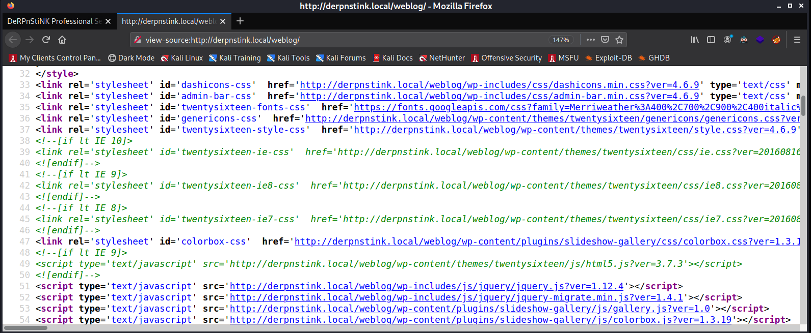

Return to Main Page
DerpNStink: 1 Walkthrough
Summary
Port Scanning
Running a port scan against the full port range to determine which ones are open.
# Nmap 7.91 scan initiated Sun Sep 26 19:14:03 2021 as: nmap -p- -oN ping_tcp 10.0.0.21
Nmap scan report for 10.0.0.21
Host is up (0.0022s latency).
Not shown: 65532 closed ports
PORT STATE SERVICE
21/tcp open ftp
22/tcp open ssh
80/tcp open http
MAC Address: 00:0C:29:17:69:BF (VMware)
# Nmap done at Sun Sep 26 19:14:22 2021 -- 1 IP address (1 host up) scanned in 19.30 seconds
Running an nmap scan using the flags -sV and -sC to enumerate service versions and other information.
# Nmap 7.91 scan initiated Sun Sep 26 19:15:02 2021 as: nmap -p21,22,80 -sV -sC -oN script_tcp 10.0.0.21
Nmap scan report for 10.0.0.21
Host is up (0.00021s latency).
PORT STATE SERVICE VERSION
21/tcp open ftp vsftpd 3.0.2
22/tcp open ssh OpenSSH 6.6.1p1 Ubuntu 2ubuntu2.8 (Ubuntu Linux; protocol 2.0)
| ssh-hostkey:
| 1024 12:4e:f8:6e:7b:6c:c6:d8:7c:d8:29:77:d1:0b:eb:72 (DSA)
| 2048 72:c5:1c:5f:81:7b:dd:1a:fb:2e:59:67:fe:a6:91:2f (RSA)
| 256 06:77:0f:4b:96:0a:3a:2c:3b:f0:8c:2b:57:b5:97:bc (ECDSA)
|_ 256 28:e8:ed:7c:60:7f:19:6c:e3:24:79:31:ca:ab:5d:2d (ED25519)
80/tcp open http Apache httpd 2.4.7 ((Ubuntu))
| http-robots.txt: 2 disallowed entries
|_/php/ /temporary/
|_http-server-header: Apache/2.4.7 (Ubuntu)
|_http-title: DeRPnStiNK
MAC Address: 00:0C:29:17:69:BF (VMware)
Service Info: OSs: Unix, Linux; CPE: cpe:/o:linux:linux_kernel
Service detection performed. Please report any incorrect results at https://nmap.org/submit/ .
# Nmap done at Sun Sep 26 19:15:23 2021 -- 1 IP address (1 host up) scanned in 20.70 seconds
Information Gathering
After a poking around a little, the web server becomes the first point of interest. First I checked /robots.txt. This revealed a couple directories that did not lead to anything interesting. Then I ran gobuster against the web server.
┌──(kali㉿kali)-[~/Documents/VulnHub/DerpNStink_1/WebEnum]
└─$ gobuster dir -u http://10.0.0.21 -w /usr/share/seclists/Discovery/Web-Content/directory-list-2.3-medium.txt
===============================================================
Gobuster v3.1.0
by OJ Reeves (@TheColonial) & Christian Mehlmauer (@firefart)
===============================================================
[+] Url: http://10.0.0.21
[+] Method: GET
[+] Threads: 10
[+] Wordlist: /usr/share/seclists/Discovery/Web-Content/directory-list-2.3-medium.txt
[+] Negative Status codes: 404
[+] User Agent: gobuster/3.1.0
[+] Timeout: 10s
===============================================================
2021/09/26 19:59:10 Starting gobuster in directory enumeration mode
===============================================================
/weblog (Status: 301) [Size: 306] [--> http://10.0.0.21/weblog/]
/php (Status: 301) [Size: 303] [--> http://10.0.0.21/php/]
/css (Status: 301) [Size: 303] [--> http://10.0.0.21/css/]
/js (Status: 301) [Size: 302] [--> http://10.0.0.21/js/]
/javascript (Status: 301) [Size: 310] [--> http://10.0.0.21/javascript/]
/temporary (Status: 301) [Size: 309] [--> http://10.0.0.21/temporary/]
/server-status (Status: 403) [Size: 289]
===============================================================
2021/09/26 19:59:48 Finished
===============================================================
The directory /weblog is revealed. Upon visiting this directory we get redirected to "derpnstink.local/weblog", so I add this to my /etc/hosts file.
┌──(kali㉿kali)-[~/Documents/VulnHub/DerpNStink_1/WebEnum]
└─$ cat /etc/hosts
127.0.0.1 localhost
127.0.1.1 kali
10.0.0.21 derpnstink.local
# The following lines are desirable for IPv6 capable hosts
::1 localhost ip6-localhost ip6-loopback
ff02::1 ip6-allnodes
ff02::2 ip6-allrouters
Now the webpage should load with this
Nothing immediately stands out as interesting on this page so I take a look at the source code.

Foothold
Privesc - Root